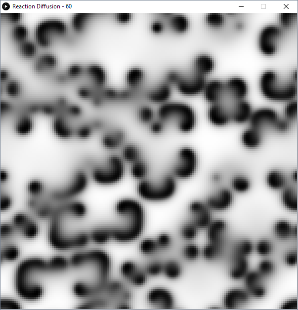

Reaction-Diffusion
Controls:
1-9: Parameter presets
T: Disable rendering for turbo speed
Space: Toggle simulating
Concept:
This is the Gray-Scott Reaction-Diffusion system. A variety of interesting patterns emerge from different input parameters, and some of these patterns are arguably found in nature. By plotting the parameter space, it was possible to find interesting parameter sets. Though sensitive to initial conditions, this implementation is moderately robust to on-the-fly parameter changes.
Credits:
Processing.org
